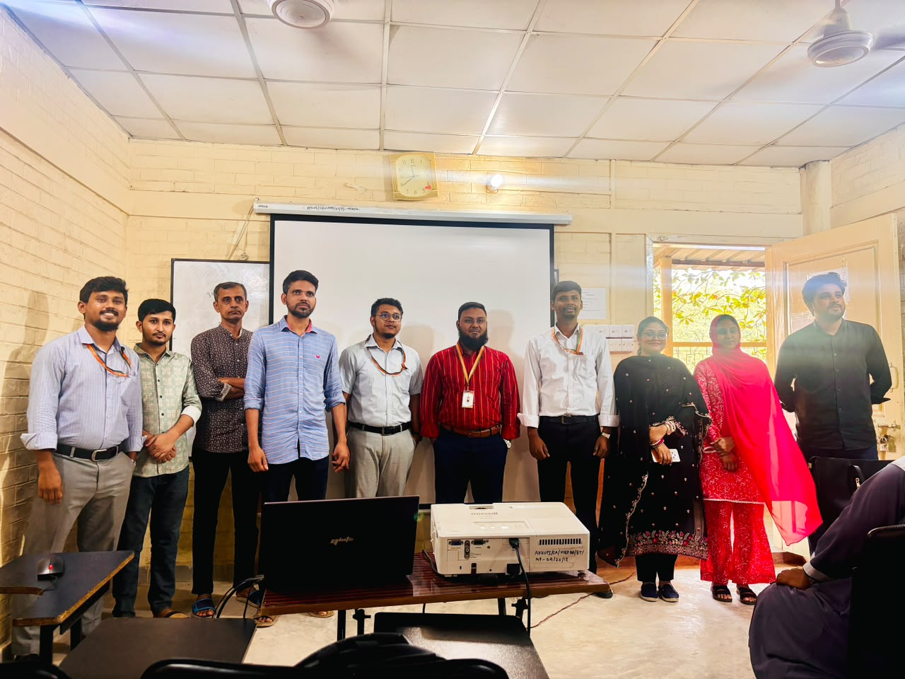
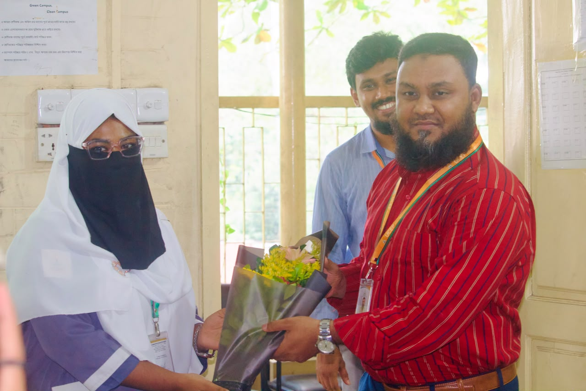
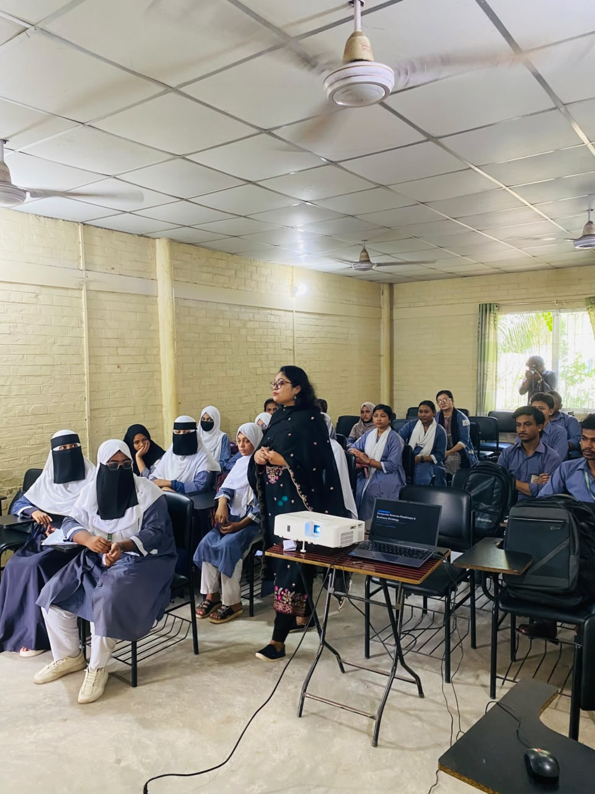
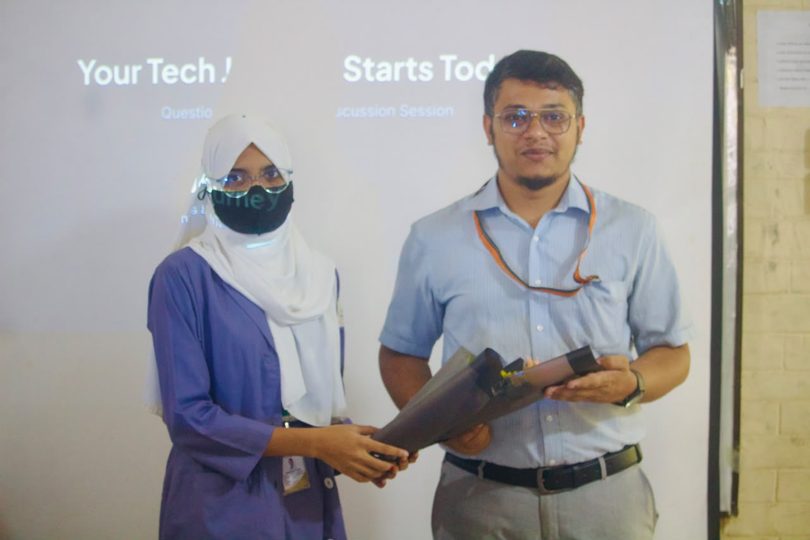
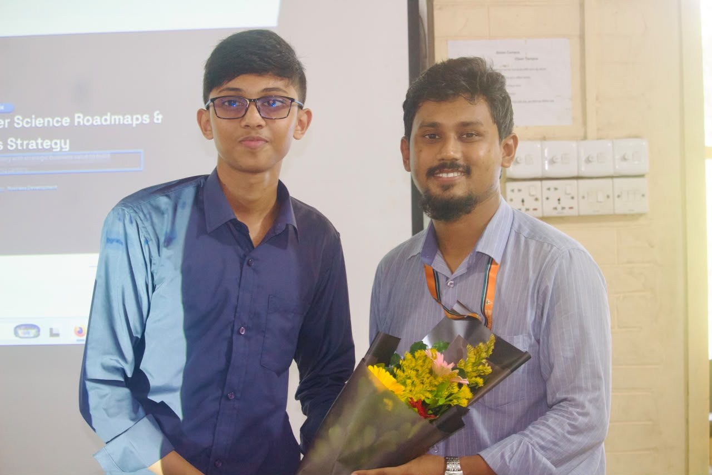
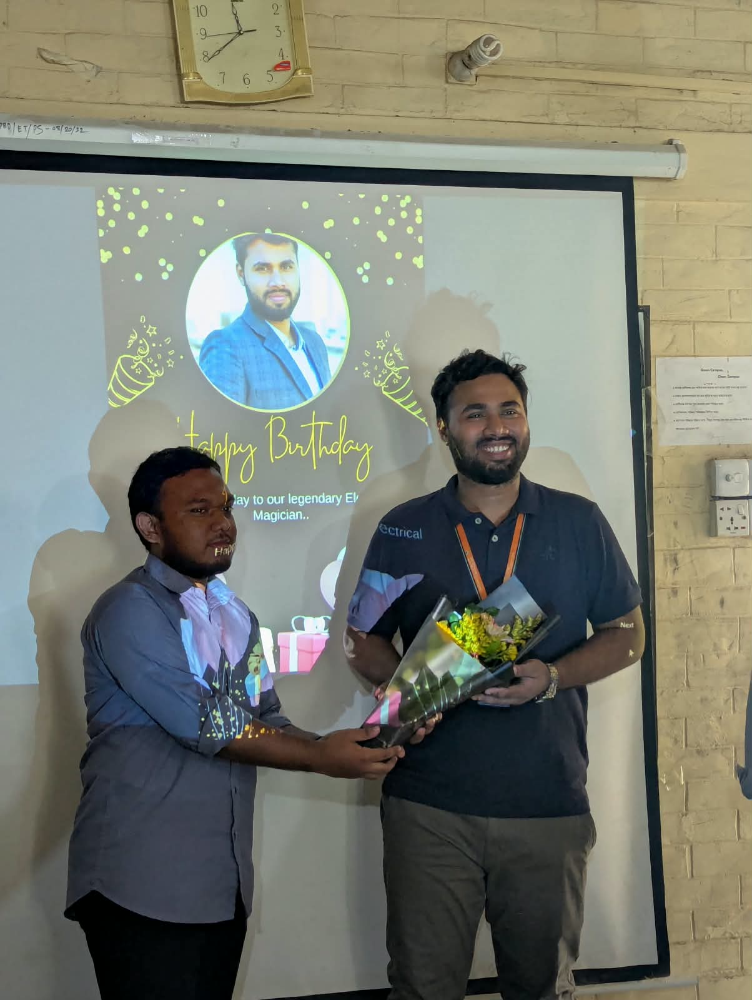

Computer Science Career Guideline Event 2026

On October 15, 2026, we successfully organized a Computer Science Career Guidance Event at A K Khan UCEP Polytechnic Institute, bringing together students to explore career opportunities and future pathways in the field of Computer Science and Technology.
The event focused on helping students understand different career paths, develop the right technical skills, and prepare themselves for the rapidly evolving technology industry.
As Computer Science students, we believe that learning the right skills, gaining practical experience, and maintaining a continuous learning mindset are essential for building a successful career in technology.
I’m grateful to everyone who contributed to making this event successful, especially our respected teachers, juniors, and fellow students. Special thanks to the CST 24–25 Batch for organizing this valuable initiative.
Engr. Abir Hossain Shakil

As part of the Computer Science Career Guidance Event 2026 organized by the CST 24–25 batch at A K Khan UCEP Polytechnic Institute, our respected Engr. Abir Hossain Shakil, Vice Principal of the institute, attended the event as the chief guest and delivered a general address to the students.
His presence added significance to the occasion, which brought students together to explore career opportunities, gain guidance, and think about their academic and professional futures. His address was an important part of the program, reflecting the value of institutional support and encouragement in students’ educational journeys.
The event provided a meaningful opportunity for students to engage with career guidance and reflect on the importance of learning, personal development, and preparation for future professional challenges.
We are grateful to our respected Vice Principal for joining us as the chief guest and contributing to this memorable event.
Joyita Das Gupta

As part of the Computer Science Career Guidance Event 2026 at A K Khan UCEP Polytechnic Institute, our honorable Joyita Das Gupta, Instructor of Computer Science and Technology, delivered an insightful session on Empowering Women in Computer Science & Technology. Her presentation focused on the career opportunities available to female diploma students in Bangladesh and how technology can help them build independent, successful careers.
The session highlighted three major career pathways: freelancing and remote work, corporate software engineering, and government service opportunities. Ma’am discussed the importance of developing practical technical skills, exploring high-demand fields such as web development and Python automation, building a strong portfolio, and gaining real-world experience while pursuing a diploma.
She also emphasized the advantages of remote work, financial independence, professional mentorship, and continuous learning. In addition, the session introduced potential government-sector roles and encouraged students to prepare for relevant competitive examinations.
Overall, the presentation was a valuable reminder that women can build rewarding careers in technology through technical competence, dedication, and consistent effort. It encouraged female CST students to explore their opportunities, strengthen their skills, and confidently pursue their professional goals in the evolving world of Computer Science and Technology.
Arman Hossen

As part of the Career Guidance Event organized by the CST 24–25 batch at A K Khan UCEP Polytechnic Institute, Arman Hossen, Instructor of Electrical Technology, shared valuable guidance on career planning for Diploma in Computer Science and Technology (CST) students.
His presentation focused on three major pathways after completing a diploma: higher education, government employment, and professional skill development. He discussed opportunities to pursue a B.Sc. in CSE or related fields, explore eligible government and private-sector jobs, and develop practical skills in programming, web development, networking, databases, and cybersecurity.
The session also emphasized the importance of building a strong CV and portfolio, completing practical projects, improving English and communication skills, and preparing systematically for competitive examinations. Students were encouraged to verify admission requirements and job eligibility through official sources and follow a structured plan to achieve their goals.
Overall, the session highlighted an important message: completing a diploma is not the end of the journey, but the beginning of new opportunities. With clear goals, continuous learning, practical experience, and consistent preparation, CST students can take confident steps toward their academic and professional futures.
Joynal Abedin

As part of the Computer Science Career Guidance Event 2026 at A K Khan UCEP Polytechnic Institute, our respected Joynal Abedin, Head of the Computer Science and Technology Department, shared valuable insights into career development, technical learning, and business strategy in the technology industry.
His presentation explored several key career pathways, including software engineering, system design, web development, mobile application development, and networking. It outlined the importance of mastering programming fundamentals, understanding software architecture, gaining practical experience, and following structured learning roadmaps to become an industry-ready professional.
Beyond technical skills, the session emphasized the importance of connecting technology with real-world problems and business value. Topics included technical communication, software monetization, product development, personal branding, GitHub portfolios, technical blogging, and professional networking.
Overall, the presentation highlighted that success in the technology industry requires more than coding alone. By combining strong engineering fundamentals with problem-solving, communication, business awareness, and continuous learning, CST students can prepare themselves for professional opportunities and future entrepreneurship.
We are grateful to our respected Joynal Abedin sir for sharing his knowledge and guidance, helping students better understand the skills and strategic thinking needed to build successful careers in Computer Science and Technology.
Utchash Dev Nath

As part of the Computer Science Career Guidance Event 2026 at A K Khan UCEP Polytechnic Institute, our respected Utchash Dev Nath, Head of the Electrical Technology Department, shared valuable insights into career opportunities in robotics, the Internet of Things (IoT), and embedded systems.
His presentation explored how software engineering and hardware technologies work together to build intelligent systems. It highlighted essential technical skills, including C/C++, Python, microcontroller programming, sensor integration, firmware development, IoT connectivity, and robotics software.
The session also introduced a structured career roadmap, encouraging students to strengthen their programming fundamentals, gain hands-on experience with platforms such as ESP32 and STM32, develop practical projects, and showcase their work through a well-documented GitHub portfolio. In addition, it highlighted career opportunities in embedded software engineering, robotics, IoT solutions, and edge AI.
Overall, the presentation demonstrated how computer science knowledge can be applied to solve real-world engineering challenges. It encouraged students to combine software expertise with practical hardware experience, pursue continuous learning, and explore emerging opportunities in robotics, automation, and intelligent embedded systems.
We are grateful to our respected Utchash Dev Nath sir for sharing his knowledge and guidance, helping students understand the skills and preparation needed to build careers at the intersection of software and hardware.
A Note of Gratitude
I would like to express my sincere gratitude to everyone who contributed to making the Computer Science Career Guidance Event 2026 at A K Khan UCEP Polytechnic Institute a memorable experience.
I am especially thankful to our respected Vice Principal, Engr. Abir Hossain Shakil sir, our honorable teachers, department heads, and all the distinguished speakers for sharing their valuable knowledge, guidance, and inspiration with us.
My heartfelt thanks to the CST 24–25 batch and everyone involved in organizing this event. It was a privilege to be part of an initiative that brought students together to learn, explore career opportunities, and gain new perspectives on their futures.
This experience has been a valuable learning opportunity for me, and I am grateful to everyone who supported and contributed to its success.
Thank you all for making this event meaningful, inspiring, and memorable.